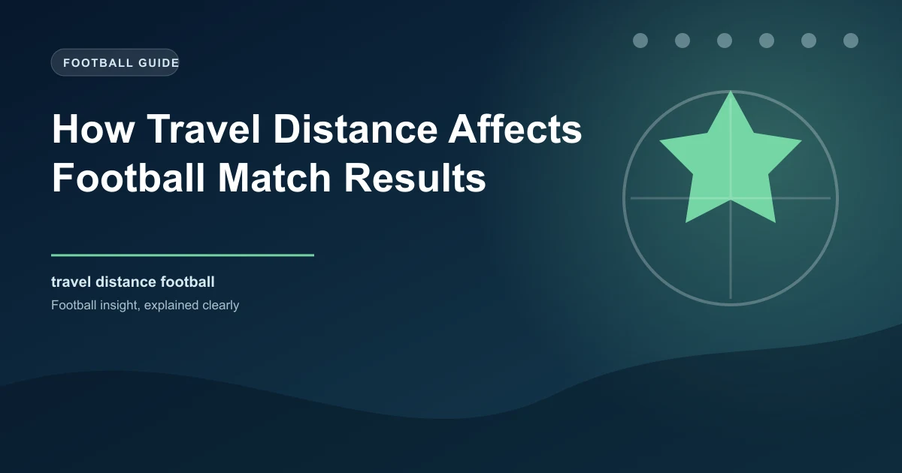

Most football betting analysis focuses on form, quality, and motivation. Travel distance is one of the most overlooked factors in match prediction, yet it has a measurable impact on player performance, recovery time, and ultimately match outcomes. Understanding how travel affects football results gives you an edge that the majority of bettors completely ignore.
Whether it is a domestic trip across England or an intercontinental flight for a European tie, the physical and psychological toll of travel influences how teams perform. This guide explains the science, the patterns, and the betting opportunities that travel distance creates.
Travel fatigue is not just about tiredness. It involves several physiological factors that directly affect athletic performance.
The impact is cumulative. A team that flies long distances regularly throughout a season will experience more fatigue than a team that mostly travels by bus within their own country. This is one reason why teams competing in European competition sometimes underperform in their domestic league, particularly in the weeks following away trips to distant cities.
Even within a single country, travel distance matters. In England, a team travelling from London to Newcastle (approximately 270 miles) experiences more fatigue than a team travelling from London to Brighton (50 miles). The difference is not enormous for a single trip, but it compounds over a season.
Teams in the north of England travelling to London for a midweek match face a longer journey than the reverse, which can be a factor in their weekend performance.
The mode of transport also matters. Teams that travel by private plane experience less fatigue than those using commercial flights or buses. Wealthier clubs with better travel arrangements have a measurable advantage in this area.
The most significant travel impact occurs in European competition. A team flying from Manchester to Istanbul (approximately 1,700 miles) or from London to Moscow (1,600 miles) experiences substantially more fatigue than a team travelling within their own league.
The impact of European travel is most visible in the domestic league matches that follow. Teams returning from a midweek European away trip often underperform in their Saturday league match, particularly if the travel involved a long flight and a time zone change of three or more hours.
Travel distance is most useful as a factor in specific scenarios. Here is how to incorporate it into your analysis.
The most exploitable travel scenario is a team returning from a European away match on Wednesday night to play a domestic league match on Saturday. The combination of travel fatigue, reduced preparation time, and potential squad rotation creates value on the opposing team, especially if the opponents had a full week to prepare.
Not all teams are equally affected by travel. Several factors determine how much travel impacts a specific team.
Altitude is a special case of travel impact that deserves separate attention. Teams playing at altitude (above 1,500 metres) experience reduced oxygen availability, which affects endurance and recovery.
In European football, this is relevant for teams travelling to cities like Madrid (650m), Bilbao (20m), or Istanbul (39m). In South American football, altitude is a major factor, with teams like La Paz (3,640m) and Bogota (2,640m) having a massive home advantage against teams from low-altitude cities.
For betting purposes, altitude is most relevant in international competitions and South American leagues. In European domestic football, the altitude differences between cities are usually too small to have a significant impact.
Travel distance is a real factor, but it is not the most important factor in any match. Team quality, form, and motivation almost always outweigh travel considerations. Use travel as a tiebreaker or an additional data point, not as the primary basis for your betting decisions.
Our 1X2 predictions incorporate multiple factors including squad rotation risks after European travel to identify value in domestic league matches.
 Win
Win